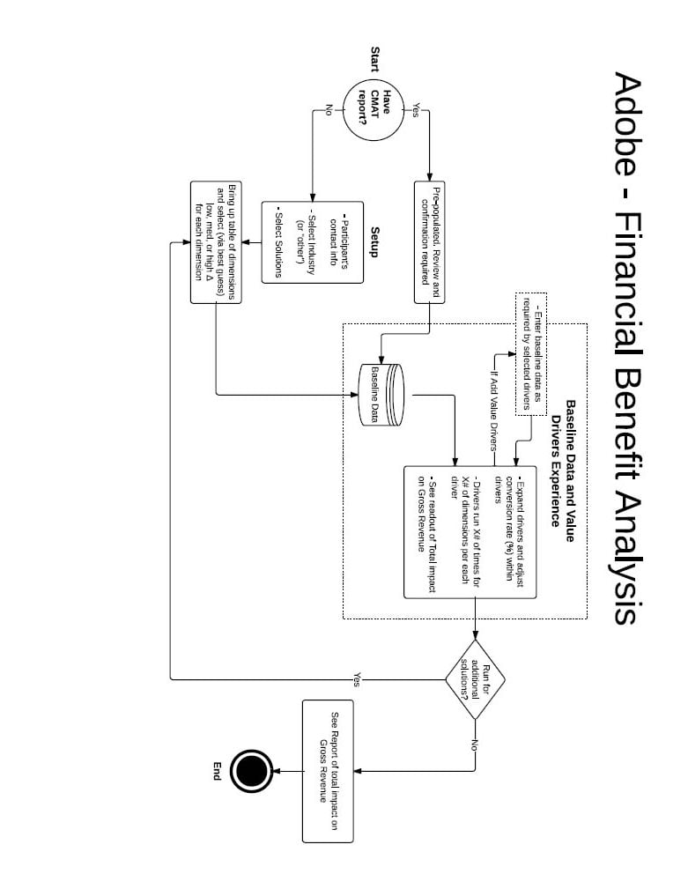

A sales team at Adobe needed a tool to use in the field to present data visualizations to many high-level clients. Visualizations which needed to be not just aesthetically pleasing but informative and easily manipulated in context of a sales presentation. Moreover, it needed to work responsively across various device platforms, be accurate and engaging to the end audience.

After a couple days of presenting and sketching at Adobe,
we started on a complicated web app with lots of numbers interacting
with databases with a very dynamic display. Initial iteration with flow charts
I created to get the complicated process and business requirements down before
hours were spent on design and development.
While working closely and constantly iterating with developers, the team and I designed and implemented what was contained in many complicated spreadsheets into an intuitive flow with user-interactable controls to both visualize and manipulate the data. I created the wireframes below to guide that discussion during that process. These wireframes were not just a deliverable lobbed over the fence to inform design; however, they were a storytelling piece used to aid communication. They were changed and iterated upon every step of the way well through design and into development.
The win here was successfully giving Adobe sales teams a portable
and visually engaging app with which to show dynamic numbers and
time data to potential customers. Giving them the level of control
and specificity over the numbers and data while having the output
remain presentable and digestible to the audience.
The project was such a success, that after being presented internally
at Adobe, we won a slough of subsequent projects implementing similar
functionality for multiple additional departmens and needs at Adobe for
this kind of thing.